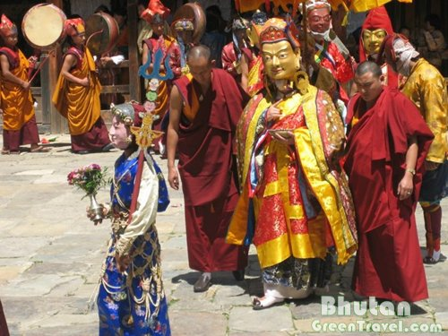
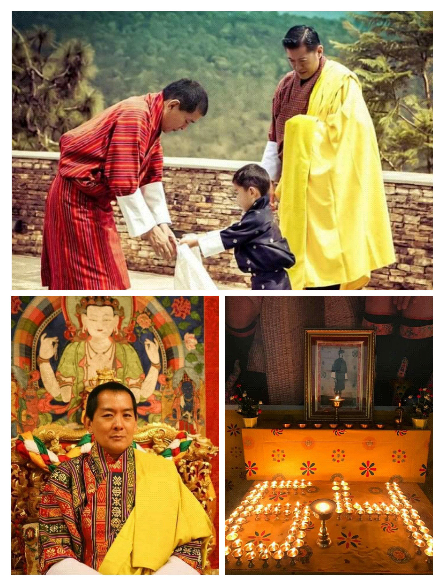

|
Nimalung TshechuNimalung Tshechu is a 3-days festival, and it is started with the usual chams and dances performed in other dzongkhags but on the final day, people are blessed with the display of Guru Tshengye Thongdrol in the morning. For the final day of the festival, people also get the opportunity to observe Guru Tshengye cham and Drametse Nga Cham performed by the monks of Nimalung Dratshang. |
11th NovemberBumthang Dzongkhag celebrated Birth Anniversary of Fourth Druk Gyalpo Jigme Singay Wangchuk. |
Bumthang Dzongkha. All Rights Reserved.